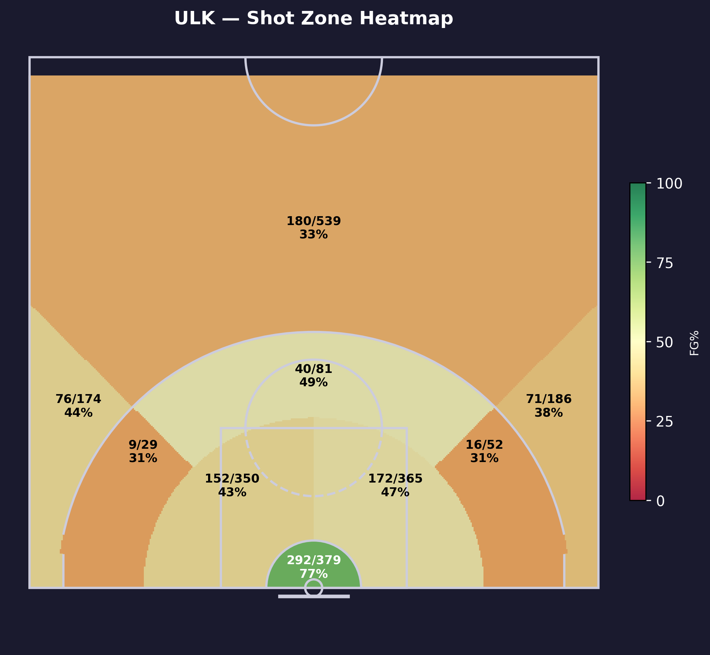
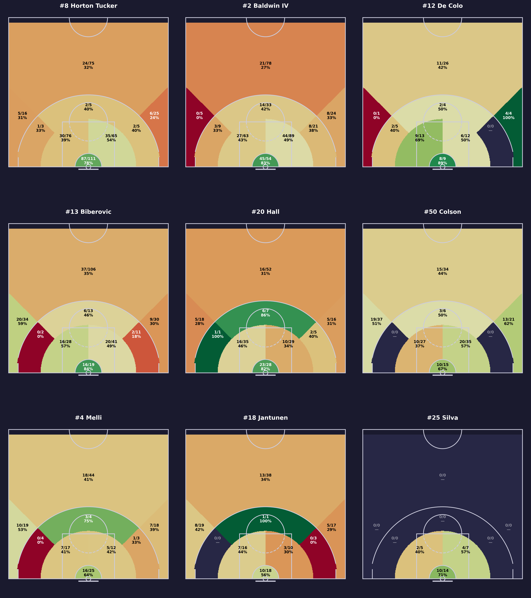
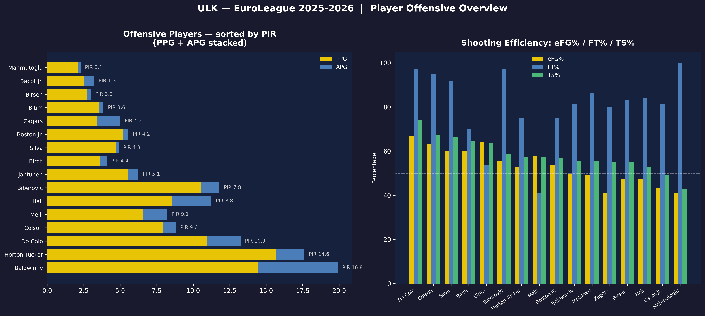
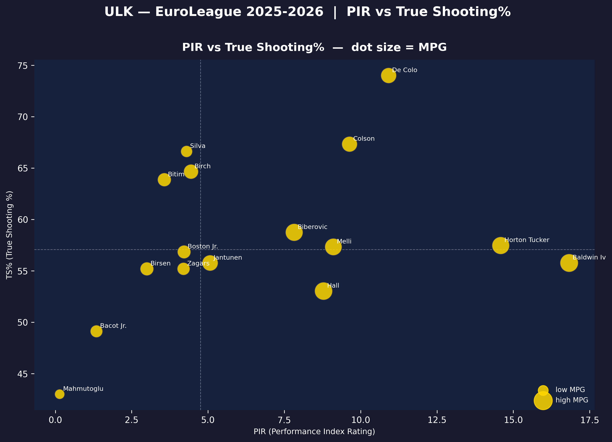
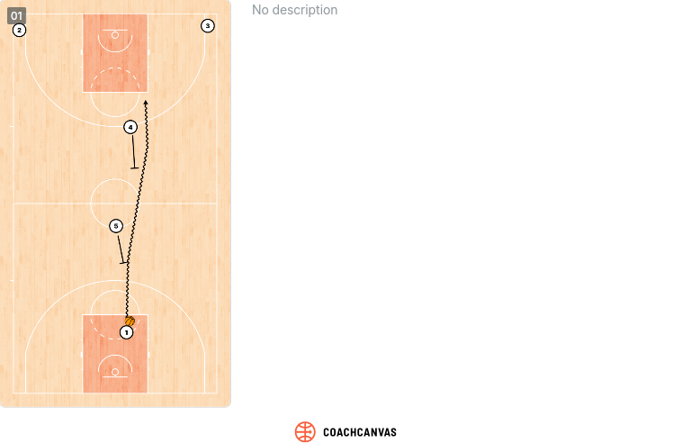
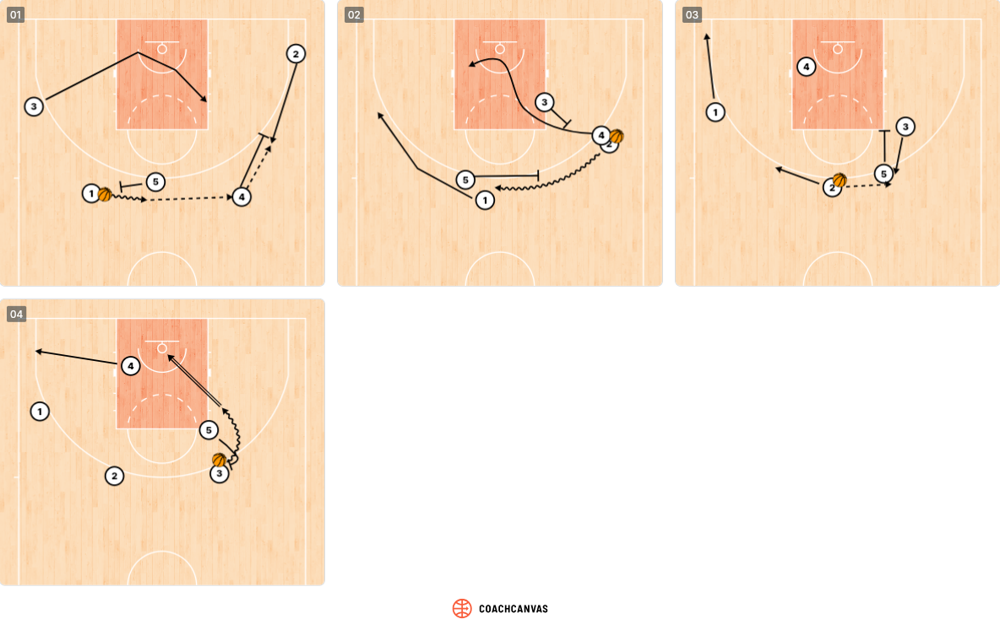
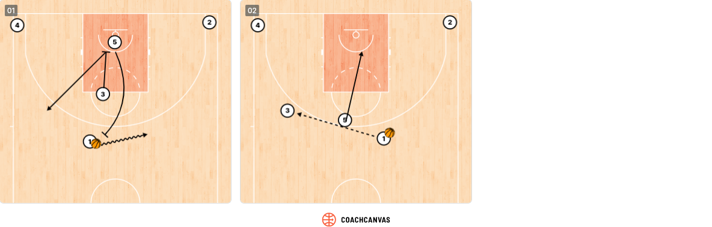

C Offensive Analysis
System Overview
Offensive philosophy
- Structured, execution-heavy offense under Šarūnas Jasikevičius
- Emphasis on fundamentals: shot selection, rebounding.
- Mix of half-court creation and physical play rather than pure flow
Pace
- Generally controlled / medium pace
- Preference to dictate tempo rather than run
Spacing principles
- Functional spacing with multiple shooters
- Use of stretch bigs to open driving and passing lanes
- Strong offensive rebounding presence → accepts imperfect spacing to gain second chances
Primary ball-handlers / creators
- Wade Baldwin IV — main creator, PnR and isolation
- Talen Horton-Tucker — on-ball scorer, secondary creator, downhill driver
- Devon Hall — connector, secondary playmaking
- Nando De Colo — veteran decision-maker in half-court
- Arturs Zagars — backup guard, organizes second unit
Shot Distribution by Zone
| Zone | Attempts | % of Total | FG% |
|---|---|---|---|
| Centre 3PT | 539 | 25.0% | 33.4% |
| Under basket | 379 | 17.6% | 77.0% |
| Left short range | 365 | 16.9% | 47.1% |
| Right short range | 350 | 16.2% | 43.4% |
| Left 3PT | 186 | 8.6% | 38.2% |
| Right 3PT | 174 | 8.1% | 43.7% |
| Centre mid-range | 81 | 3.8% | 49.4% |
| Left mid-range | 52 | 2.4% | 30.8% |
| Right mid-range | 29 | 1.3% | 31.0% |
Zone Summary
Paint & Layup: 50.8% of FGA (616/1094, FG% 56.3%) — Mid-Range: 7.5% of FGA (65/162, FG% 40.1%) — 3-Point: 41.7% of FGA (327/899, FG% 36.4%)


Key Shooters
Top shooters by attempts-per-game for a given set of zones. In the Primary zone is shown the zone with the highest scoring percentage.
3 points Shooters
| Player | 3PA/G | 3P% | Primary Zone |
|---|---|---|---|
| BIBEROVIC, TARIK | 5 | 38.8% | Right 3PT (58.8%) |
| HORTON TUCKER, TALEN | 3.4 | 30.2% | Centre 3PT (32.0%) |
| HALL, DEVON | 3.1 | 30.2% | Left 3PT (31.2%) |
Mid range Shooters
| Player | MidR PA/G | MidR FG% | Primary Zone |
|---|---|---|---|
| BALDWIN IV, WADE | 1.8 | 39.7% | Centre mid-range (42.4%) |
| BIBEROVIC, TARIK | 0.8 | 30.8% | Centre mid-range (46.2%) |
| DE COLO, NANDO | 0.8 | 44.4% | Centre mid-range (50.0%) |
In the paint Shooters
| Player | Paint PA/G | Paint FG% | Primary Zone |
|---|---|---|---|
| HORTON TUCKER, TALEN | 7.4 | 60.3% | Under basket (78.4%) |
| BALDWIN IV, WADE | 5.9 | 56.3% | Under basket (83.3%) |
| HALL, DEVON | 3.3 | 53.3% | Under basket (82.1%) |
Players Efficiency


Player Efficiency Highlights
- Baldwin IV (PIR 16.8) and Horton-Tucker (PIR 14.6) are the offensive engines — high usage but only average shooting efficiency (~55–57% TS%)
- De Colo (PIR 10.9, TS% ~74%) and Colson (PIR 9.6, TS% ~67%) are the most shooting-efficient contributors
- Biberovic and Melli are reliable secondary options — solid PIR and above-average TS%
- Hall and Bacot Jr. show below-average TS% relative to their minutes
- Bench players (Birsen, Bitim, Zagars) contribute limited offensive impact
Primary Offensive Entries
Fenerbahce runs an extensive and highly structured playbook. The common thread across nearly all sets is the pick-and-roll as the primary action or continuation, with most plays designed to either create a clean PnR read for Baldwin IV or isolate Horton-Tucker in 1-on-1 situations. Jasikevičius also maintains a dedicated set of late-clock adjustments (Spain, Flare), reinforcing that this is a system built for execution and half-court control rather than improvisation.
Entry 1 — Flat Double
Mainly played Horton-Tucker, sometimes by Baldwin IV

Defensive Priority
Force the ball handler to play with their weak hand, slow them down to prevent them reaching full screen and attacking the rim.
Entry 2

Legend:1: Wade Baldwin Iv
2: Devon Hall
3: Tarik Biberovic
4: Nicolo Melli
5: Khem Birch
Defensive Priority
Be physical on Tarik Biberovic to disrupt timing. Chase him before he receives the ball and edge on the p&R to slow him down.
Entry 3 — Spanish Pick & Roll
Spanish Pick and Roll between Horton-Tucker, Birch, and Colson to free Colson for a uncontested 3PT shot (3PT FG >50%)

Defensive Priority
Don't switch on the first screen (Colson for Birch), defender on POA is aggressive on the ball to slow down the ball.
Pick & Roll Offense
Overall PnR identity:
- Structured, half-court heavy pick & roll system
- Uses PnR as a read initiation tool, often flowing into second-side actions
- Emphasis on spacing + advantage continuation rather than early-shot hunting
Who sets screens:
- Khem Birch: primary roll big (rim pressure, vertical finishing)
- Nicolo Melli: stretch 5/4 actions, pop + short roll playmaking
- Mikael Jantunen: versatile screener (pop, slip, or switch-compatible screens)
Roll vs Pop tendencies:
- Roll-heavy with Birch (rim runs, dunker spot occupation)
- Pop/stretch heavy with Melli and Jantunen to pull bigs away from paint
- Strong use of short roll hub actions (especially Melli as connector)
Preferred side:
- Uses side PnR to force specific matchups, not fixed but handedness-driven advantage creation
- Late-clock often shifts to middle PnR to neutralize the defensive opponent scheme
Ball-handler decision-making:
- Wade Baldwin IV: primary engine, aggressive scorer + kick-out passer
- Talen Horton-Tucker: downhill scorer, reads secondary help less than Baldwin
- Devon Hall: connector, stabilizes possessions, avoids over-dribbling
- Nando De Colo: late-clock manipulator, slower reads, high IQ advantage hunting
Tendencies
- Clear handedness-driven side preference (Baldwin right / Horton-Tucker left)
- Heavy use of PnR into second action (not first-option scoring)
- Melli/Jantunen short roll decisions are central to offensive flow